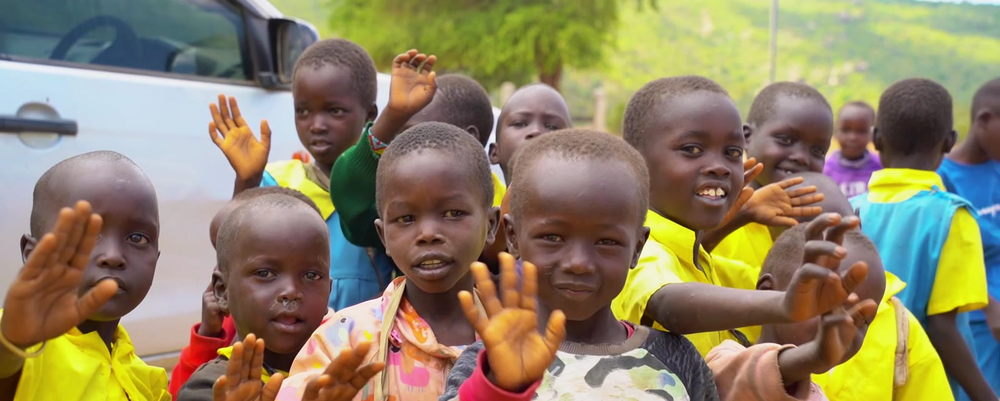
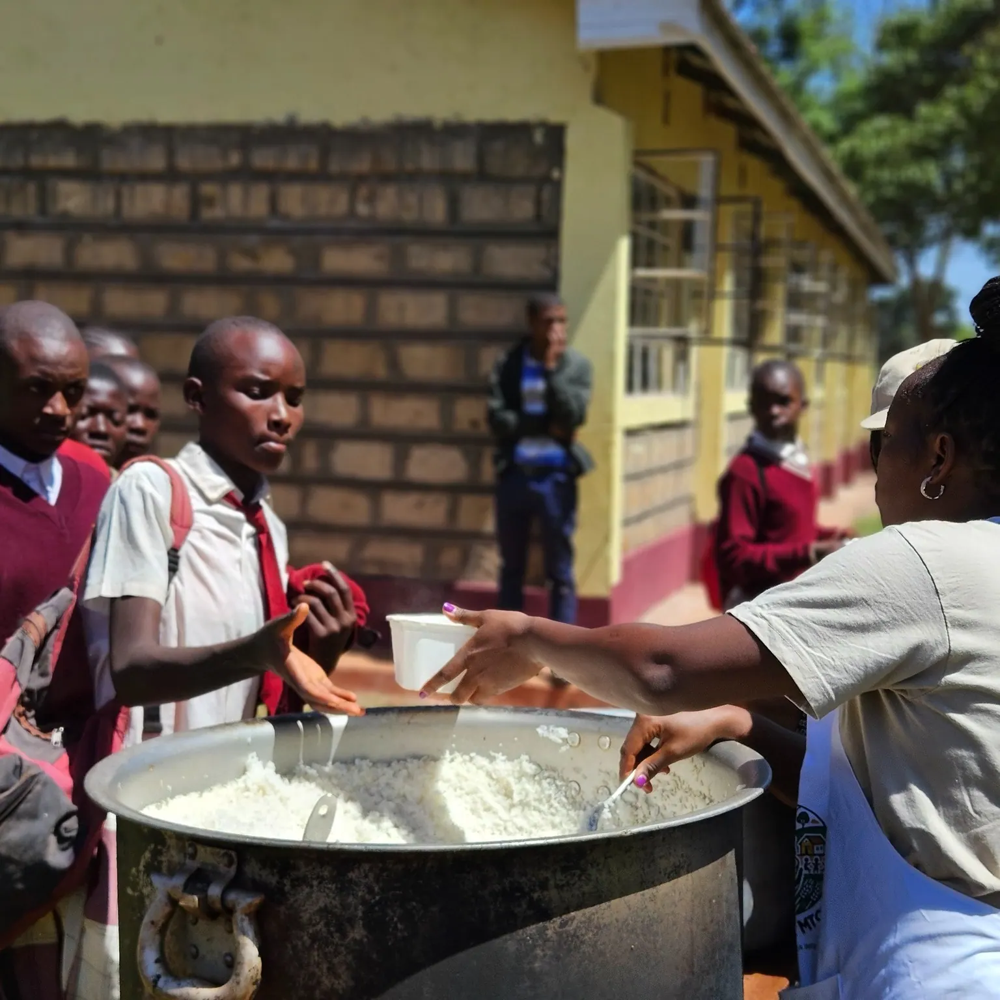
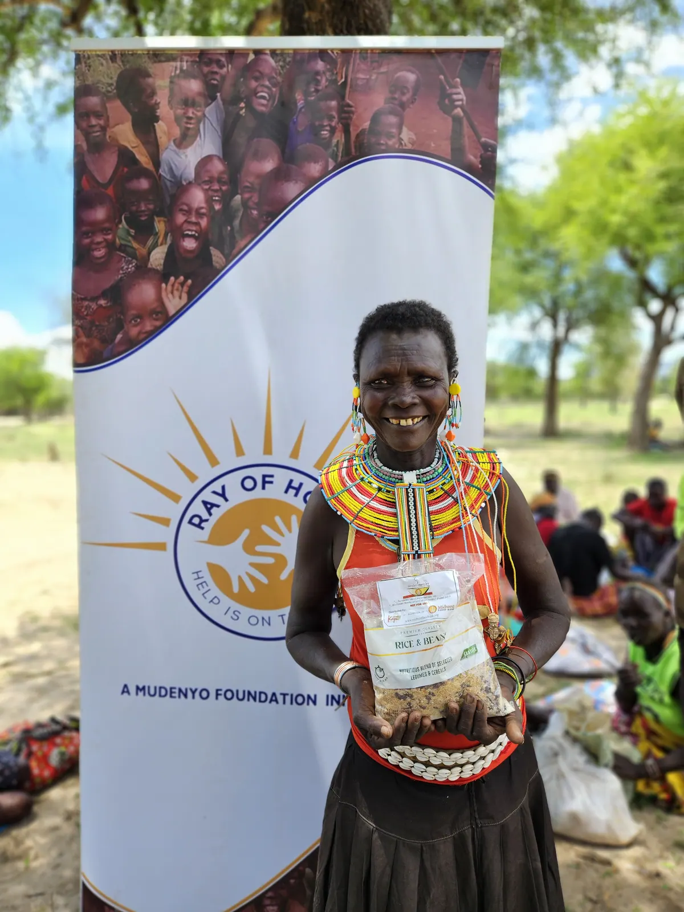
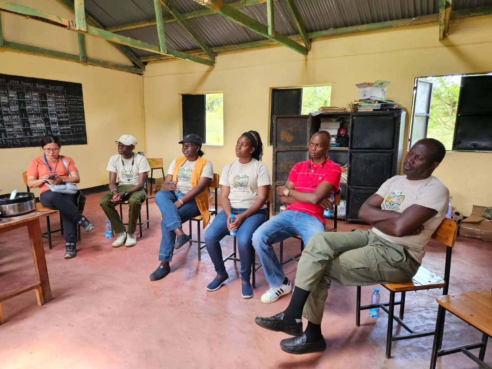

School Feeding
Daily hot meals for vulnerable school children across Kenya's Arid and Semi-Arid Lands, prepared by community cooks.
Explore school feeding
Every child deserves the opportunity to learn, grow and thrive.
When children arrive at school hungry, they cannot concentrate, retain information or thrive. Lishe Kwa Mtoto, founded in 2024 under the Ray of Hope Foundation Kenya, addresses the link between hunger and educational outcomes.
We deliver daily nutritious meals to vulnerable children in Trans Nzoia, West Pokot and other parts of Kenya's Arid and Semi-Arid Lands, tackling hunger, supporting attendance and giving every child a stronger foundation for learning.

Community cooks at partner schools prepare hot porridge each morning, so children receive a filling meal before 8:30 AM.
For many learners it is the most nutritious food of their day. We buy ingredients from local farmers, employ community cooks and work alongside teachers, parents and county leaders in some of Kenya's most food-insecure regions.

Our locally formulated porridge flour combines maize, millet, cassava, sorghum and soybeans, designed for maximum nutrition at minimal cost. Every ingredient is grown in Kenya.

"When children are fed, they can focus. When they focus, they can learn. When they learn, they can lead."
Learners at a partner school, Trans Nzoia County
Every shilling you give is transformed into a nutritious meal for a child who needs it most.
Your contribution is received securely by M-Pesa, card or bank transfer and tracked transparently.
We purchase ingredients from local farmers, supporting community livelihoods while keeping meals fresh and nutritious.
Hot meals are prepared and served each day at partner schools, supporting concentration and attendance.
Daily hot meals for vulnerable school children across Kenya's Arid and Semi-Arid Lands, prepared by community cooks.
Explore school feeding
Rapid food distribution to communities affected by floods, drought and displacement.
See how we respond
Training teachers, parents and community health workers in child nutrition best practice.
Learn moreOur team is based in Kitale, Trans Nzoia County, and works across Kenya's ASAL regions. See the work in photographs.

Learners at a partner school, Trans Nzoia County.
"I used to faint in class. Now I'm top of my school."
Faith Chebet, nine, attends Cherang'any Primary School in Trans Nzoia County. Six months after meals began at her school, her attendance was perfect and she had moved from the bottom of her class to the top five.
Grace Wanjiru, Faith's mother: "A meal changed everything."
Choose an amount that suits you. Every contribution goes toward daily school meals for children who need them.
Giving from outside Kenya? You can donate in USD, EUR, GBP and many other currencies.
Loading the latest updates…

KES 150 feeds one child for a full week. Your donation today becomes a child's chance tomorrow.